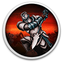

 Sin Slayers: The First Sin
Details
 |
|
| Playtime | Not Played |
| Last Activity | Never |
| Added | 13/06/2023 2:08:19 |
| Modified | 13/06/2023 2:11:20 |
| Completion Status | Not Played |
| Library | Gog |
| Source | GOG |
| Platform | PC (Windows) |
| Release Date | |
| Community Score | |
| Critic Score | |
| User Score | |
| Genre | |
| Developer | |
| Publisher | |
| Feature | |
| Links | |
| Tag | [EMT] Logo Missing [EMT] Video Micro missing Fantasy Turn-Based |
Description


Sin Slayers: The First Sin is a free demo of Sin Slayers, an isometric RPG with roguelike elements, where your choices determine how challenging the fights and enemies will be.
This version contains 2-3 hours of gameplay, all major game elements, first story act and one procedurally generated map, that you can clear multiple times.
Create, equip and lead a team of heroes. Each unit will have its own abilities and weaknesses, so plan your combat strategy accordingly. You’ll journey through stinking primeval forests, boneyards riddled with crypts and the graves of fallen warriors, and other places even the bravest adventurer would fear to tread.
Battles, traps, and bizarre enemies... Everything and everyone wishes to take your life, but don't succumb to despair. Between fights your party can take their rest at a fountain, or while on the road in an old church which leaves its doors open to the weary and wounded.
Travel every path and byway of the Valley, obtain new weapons on the field of battle or by fulfilling quests, gather ingredients for magical elixirs and resources to craft armor and amulets. If a certain item is beyond your crafting ability, ask the blacksmith in the Old Church for help. The best gear will allow you to challenge the deadliest monsters.

The souls of many heroes were cursed upon death, leaving them to wander a dark and uncharted world, an afterlife reserved for sinners. Is this the end, or..?
Gather your team. Equip them with weapons, armor, and amulets. Level up your abilities as you move forward. The Sin Lords must be slain.
Sin Slayers features a classic turn-based combat system in the tradition of the best JRPGs, giving you free rein to pit your tactical skills against the wretched inhabitants of the Valley of Fallen Sinners.
Steel yourself. Enemies are everywhere and you will need to make difficult decisions and face dire peril to prevail.
Depending on your choices, the sinfulness of your team will go up or down. If it's high — expect tougher enemies. Whatever might be buried there, is it wise to desecrate those graves? Every decision you make matters, and on the road to the next Sin Lord you will have many opportunities to choose poorly.
Every crusade against a Sin Lord will be unique as every location is randomly generated. Think you know everything there is to know about a fetid swamp? We promise there are new lessons to learn, though they may not be to your liking!
Legends tell of a place betwixt worlds, a region outside time and space called the Valley of Fallen Sinners.
A dense, preternatural fog lays like stinking breath over black woods. What cursed hordes await? Vicious beasts, damned warriors, the undead, and worse chthonian horrors, all with an unslakable craving for new souls to perpetuate their own unnatural life.
This region is for the most contemptible cowards, those who died because of their sins and the darkness weighing down their souls. At one time, they lived as brave heroes across a multitude of worlds, and bards composed ballads to their noble deeds. Until the day darkness flooded their hearts and killed them.
Now regret consumes them, but their souls will find no rest. They are doomed to wander the Valley endlessly, searching for rest, respite, an end to their torture. But they will know no peace until someone destroys the seven seals of the Portal of the Worlds. Only then will the gates open and the damned finally escape their prison...
Truth be told, no one has attempted this before.